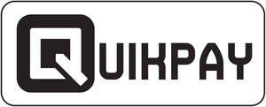

Trade Mark Journal No.2026/006 6 February 2026
UK00004326477 19 January 2026 (9,36)

- Class 9
- Payment software; Electronic payment terminal; Electronic payment terminals; Encoded prepaid payment cards; Apparatus for electronic payment processing; Terminals for electronically processing credit card payments; Electronic and magnetic ID cards for use in connection with payment for services; Apparatus for processing electronic payments; Payment terminals, money dispensing and sorting devices; Computer hardware for facilitating payment transactions by electronic means; Hardware for processing electronic payments to and from others; Software for facilitating secure credit card transactions.
- Class 36
- Payment processing; E-wallet payment services; Payment transaction card services; Contactless payment services; Debit card payment services; Payment card services; Automated payment; Bill payment services; Payment processing services; Electronic payment services; Clearing services for payment transactions; Conducting cashless payment transactions; Processing of debit card payments; Financial payment services; Automated payment services; Processing of payment transactions via the Internet; Payment administration services; Financial transfers and transactions, and payment services; Remote payment services; Electronic commerce payment services; Processing of electronic payments; Electronic processing of payments; Issuing of payment gift vouchers; Electronic wallet services (payment services); Processing of payments for banks; Issuing electronic payment cards in connection with bonus and reward schemes; Collection of payments; Issuing of payment gift cards; Processing electronic payments made through prepaid cards; Bank card, credit card, debit card and electronic payment card services; Electronic credit card transaction processing; Financial management of reimbursement payments for others; Cash disbursement services; Processing of electronic debit transactions; Collection of payments for goods and services; Credit and debit card services; Credit and cash card services; Processing payments for the purchase of goods and services via an electronic communications network; Debit account services; Electronic debit transactions; Debit card validation services; Debit card services; Cash card services; Credit card and debit card services; Financial pre-payment services; Credit fund transfer services; Electronic cash transactions; Cash replacement rendered by credit card; Monetary transaction services; Money deposit services; Services for debiting and crediting financial accounts; Cash processing; Account debiting services.
Rupert Raymond Pilgrim